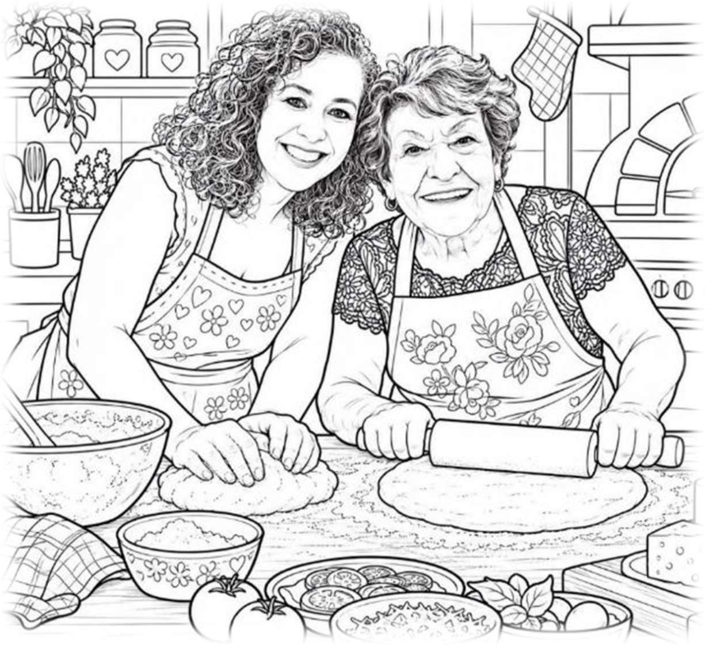

Entre Farinhas, Massas e Lembranças

Na cozinha, Zelinda e sua filha Lidiane compartilham muito mais do que receitas. Entre a farinha espalhada pela bancada e o preparo das massas, dividem conversas, sorrisos e o prazer de preparar juntas aquilo de que a família gosta. A pizza de sardinha e a torta de frango guardam um pouco dessa cumplicidade, feita de gestos simples e carinho em cada etapa do preparo.
São momentos em que cozinhar se transforma em uma maneira de estar perto, de transmitir saberes e de cultivar tradições que atravessam gerações. Para Zelinda e Lidiane, cada receita carrega também a lembrança de um
tempo vivido lado a lado, entre aromas, sabores e a alegria de fazer algo juntas.
Afinal, na cozinha de uma família, nem tudo se aprende com medidas ou instruções escritas em um caderno. Há ensinamentos que passam de mãe para filha no convívio diário, e há lembranças que permanecem para sempre no coração. Porque algumas das receitas mais preciosas levam ingredientes que não aparecem na lista: amor, cumplicidade e tempo compartilhado.